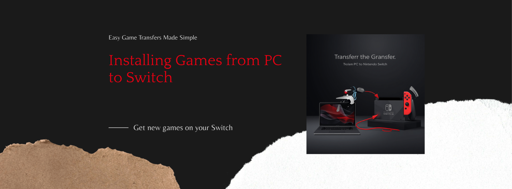

Installing Games
Different ways to get games onto your modded Switch. We strongly recommend the PC method (DBI MTP Responder) — it's the most reliable. Other methods exist if you don't have a PC handy.
What's in this section:
- Installing Games (PC) — the recommended method, using DBI
- Installing Games (Other) — USB flashdrive, mobile phone via FTP
- Tinfoil — wireless install (works but unreliable, see why)
- Ultra DBI — paid game download service for direct DBI install
Already installed and need to manage your library? See the Games section.